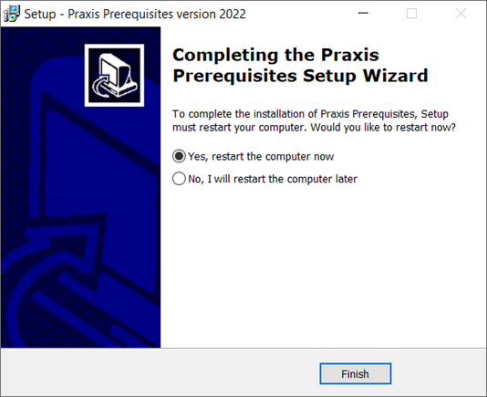

Prasyarat
| Penyiapan JFY Plus menampilkan pesan peringatan yang disebutkan di bawah pada awal Instalasi jika penyiapan JFY Plus dijalankan tanpa terlebih dahulu menjalankan Prerequisites. Instalasi prasyarat hanya diperlukan untuk pertama kali pada JFY Plus Server/Client dan dapat diabaikan setelahnya. |

-
Jalankan PreSetup.JFY Plus.<Version>.exe untuk memasang semua prasyarat yang diperlukan untuk menjalankan aplikasi JFY Plus.
| Version adalah Tahun dengan akhiran huruf. |

-
Klik Install untuk memulai Instalasi.

-
Penyiapan ini memasang semua native redistributable, .Net Frameworks, dan driver lain yang digunakan oleh JFY Plus.

-
Klik Finish untuk menyelesaikan penyiapan dan Mulai Ulang komputer.
